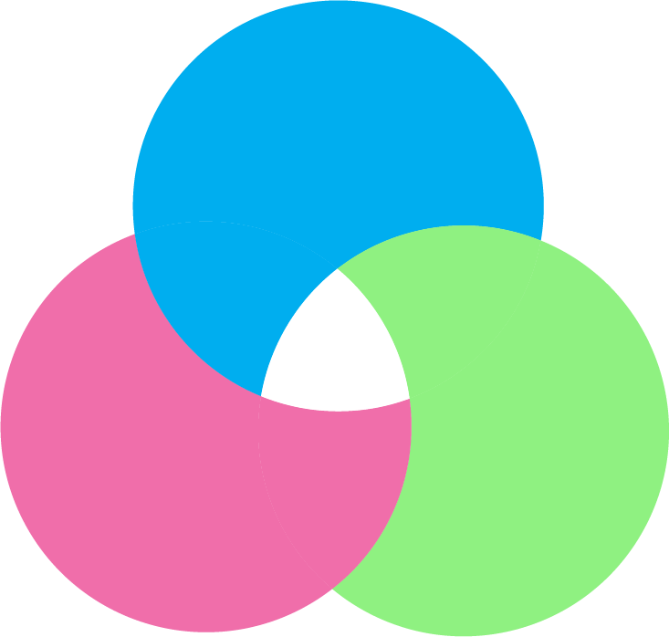

- 3대 영양소(탄수화물, 단백질, 지방)균형
- 비타민, 무기질, 식이섬유 등 영양소 제공
- 나트륨 및 단순당 절감 노력
건강한 메뉴
- 자체 드레싱 개발
- 주기적인 신메뉴 출시 및 품평회 운영
- 메뉴 모니터링 및 개선 프로젝트 진행
맛을 통한 즐거움
- 재료 가공 최소화
- 영양소 보존 및 신선도 제고
- 친화경 유기농 재료 사용
가공 최소화
- 메뉴 제공시 나무그릇 또는 종이용기 사용
- 매장 내 일회용품 사용 단절을 위한 노력
- 환경 캠페인 실시
환경보호


Healthy
Fast
Eco-Friendly
Salady